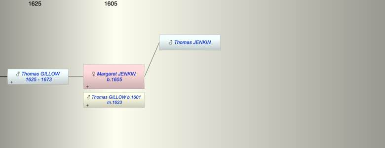

| [Index] |
| Margaret JENKIN (1605 - ) |
|  |
| b. abt 1605 |
| m. 24 Mar 1623 Thomas GILLOW (1601 - ) at Eythorne |
| Parents: |
| Thomas JENKIN |
| Children (1): |
| Thomas GILLOW (1625 - 1673) |
| Grandchildren (4): |
| Margaret GILLOW (1646 - ), Mary GILLOW (1648 - ), John GILLOW (1651 - 1681), Elizabeth GILLOW (1654 - ) |
| Events in Margaret JENKIN (1605 - )'s life | |||||
| Date | Age | Event | Place | Notes | Src |
| abt 1605 | Margaret JENKIN was born | Note 1 | |||
| 24 Mar 1623 | 18 | Married Thomas GILLOW (aged 22) | Eythorne | Note 2 | |
| 1625 | 20 | Birth of son Thomas GILLOW | Note 3 | ||
| 23 Nov 1673 | 68 | Death of son Thomas GILLOW (aged 48) | Note 4 | ||
| Created on a Mac™ using iFamily for Mac™ on 8 Oct 2023 |